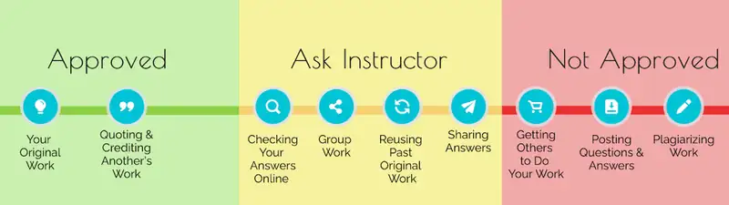

Preface¶
About OpenStax¶
OpenStax is part of Rice University, which is a 501(c)(3) nonprofit charitable corporation. As an educational initiative, it’s our mission to transform learning so that education works for every student. Through our partnerships with philanthropic foundations and our alliance with other educational resource companies, we’re breaking down the most common barriers to learning. Because we believe that everyone should and can have access to knowledge.
About OpenStax Resources¶
Customization¶
Introduction to Philosophy is licensed under a Creative Commons Attribution 4.0 International (CC BY) license, which means that you can distribute, remix, and build upon the content, as long as you provide attribution to OpenStax and its content contributors.
Because our books are openly licensed, you are free to use the entire book or select only the sections that are most relevant to the needs of your course. Feel free to remix the content by assigning your students certain chapters and sections in your syllabus, in the order that you prefer. You can even provide a direct link in your syllabus or learning management system to the sections in the web view of your book.
Instructors also have the option of creating a customized version of their OpenStax book. The custom version can be made available to students in low-cost print or digital form through their campus bookstore. Visit the Instructor Resources section of your book page on OpenStax.org for more information.
Art Attribution¶
In Introduction to Philosophy, most art contains attribution to its title, creator or rights holder, host platform, and license within the caption. Because the art is openly licensed, anyone may reuse the art as long as they provide the same attribution to its original source. If you reuse illustrations, graphs, or charts from this text that do not have attribution provided, use the following attribution: Copyright Rice University, OpenStax, under CC BY 4.0 license.
Errata¶
All OpenStax textbooks undergo a rigorous review process. However, like any professional-grade textbook, errors sometimes occur. Writing style guides and other contextual frameworks also change frequently. Since our books are web-based, we can make updates periodically when deemed pedagogically necessary. If you have a correction to suggest, submit it through the link on your book page on OpenStax.org. Subject matter experts review all errata suggestions. OpenStax is committed to remaining transparent about all updates, so you will also find a list of past errata changes on your book page on OpenStax.org.
Format¶
You can access this textbook for free in web view or PDF through OpenStax.org, and for a low cost in print.
About Introduction to Philosophy¶
Introduction to Philosophy provides an overview of a common range of philosophical topics for a first- or second-year general education philosophy course. It is organized thematically, following the principal categories of academic philosophy (logic, metaphysics, epistemology, theories of value, and history of philosophy). A recurring theme of Introduction to Philosophy is its incorporation of multicultural and global perspectives. Texts, thinkers, and concepts from Middle Eastern, Indian, Chinese, Japanese, Latin American, Indigenous, and African philosophy are fully integrated into discussions of concepts and topics, broadening the study of philosophy beyond the Western tradition. Another goal of the text is to help students develop critical thinking, reading, and writing skills.
Reflecting the Full Diversity of Human Understanding¶
A multicultural and global perspective is a central organizing principle of Introduction to Philosophy. This text explores Eastern, African, and Indigenous perspectives in concert with and, in some cases, in juxtaposition to classical Western thinkers. Additionally, the authors have made a special effort to highlight the philosophical work of women, who have made important contributions to the history of philosophy in numerous traditions. This broader emphasis introduces students to approaches that open up traditional philosophical questions in provocative ways, offering fresh possibilities for social and individual understanding. As just one example, alongside discussion of the individualistic ways that Hume and Locke attempted to answer the question “what is the self” appears discussion of the African concept of ubuntu, sometimes translated as “a person is a person through other persons.” Discussions of the four noble truths of Buddhism as a path to achieve liberation from suffering, the four interrelated concepts at the heart of Mohist ethical theory, and Carol Gilligan’s care ethics are other examples of well-established answers to deep philosophical questions that provide fresh additions to classical Western ways of thinking.
Providing Students with Transferable Skills¶
Introduction to Philosophy is intentionally organized to develop critical thinking, research, reading, and writing skills. There is an entire chapter devoted to these transferrable skills associated with philosophy. Another chapter addresses logic and reasoning. Additionally, interspersed throughout the text are features providing guidance on how to read philosophy effectively, how to conduct research and evaluate sources, and how to write philosophy papers. These features aim to be very explicit about the habits and practices that enable one to be a good student of philosophy and, by extension, a good critical thinker.
Reminding Readers that Philosophy Is a Living Discipline¶
Calling attention to the fact that philosophy is not just a feature of our human past, Introduction to Philosophy discusses the ways contemporary academic philosophers address some of our most pressing ethical and moral issues. Examples include discussions of bioethics, emerging issues surrounding genetic engineering and communication technologies, what brain science can and cannot tell us about human consciousness, and morality pertaining to human treatment of the natural world. Through discussion of these topics and others, readers will gain awareness of the range of answers that contemporary philosophers offer to current issues and learn to appreciate the type of reasoning that philosophers use. Throughout the text, students are also encouraged to critically reflect on philosophical points of view and develop their own philosophical positions.
Enriching and Engaging Features¶
“Doing” Philosophy¶
While there is certainly not one method of “doing” philosophy, there are practices and habits that make someone a better reader, writer, researcher, and thinker in philosophy. A set of recurring features makes these skills explicit and concrete, with guidance geared toward the introductory student.
- Think Like a Philosopher. These features adopt one of two approaches. Some instances prompt students to engage with concepts key to philosophical argument, and thus to critical thinking, either in the form of interactive online exercises or as written guidance. Others guide students in formulating their own approaches to philosophical questions.
- Write Like a Philosopher. These features challenge the reader to articulate their own written responses to philosophical prompts or to craft their own philosophical arguments. Clear guidance is given on both the considerations that should appear in the response and the most effective structure for written philosophical discourse.
- Read Like a Philosopher. These features prompt students to engage with portions of key primary texts, such as Plato’s Apology or the Daodejing. Clear structure is provided, guiding the reader on what elements of the text to pay close attention to and what questions they should hold in their minds while reading.
“How It All Hangs Together”¶
Philosophy is an inherently interconnected undertaking that speaks to universal human concerns. The broad questions philosophers ask (e.g., what makes a good life, how does one define morality, how should people treat one another, what rights should be accorded individuals within society) touch many aspects of our social and individual existences. A number of features address the interconnectedness of philosophical inquiry and philosophical thought, as well as its relevance to all lives.
- Connections features. Throughout the text, callouts direct students to additional coverage of both important theories and key thinkers in other chapters.
- Videos. Video features provide supplemental information from trusted contemporary sources, such as the BBC Radio 4 series A History of Ideas and the e-series Wi-Phi Philosophy.
- Podcasts. Podcast links are provided from engaging series, such as The History of Philosophy without Any Gaps and Philosophy Bites.
Pedagogical Framework¶
An effective pedagogical framework helps students structure their learning and retain information.
- Chapter Outlines. Each chapter opens with an outline and introduction, familiarizing students with the material that will follow. Throughout the chapter, material is chunked into manageable sections of content within each of the larger main heads.
- Learning Objectives. Every main section begins with two to five clear, concise, and measurable learning objectives, tagged to Bloom’s levels. These objectives are designed to help the instructor decide what content to include or assign and to guide student expectations. After completing the textual sections and end-of-chapter exercises, students should be able to demonstrate mastery of the learning objectives.
- Chapter Summaries. Organized by section heads, chapter summaries distill the information presented in each chapter to key, concise points.
- Key Terms. Key terms are bolded and followed by in-text definitions. A glossary of key terms also appears at the end of each chapter.
- Critical Thinking Questions. Each chapter ends with 10 to 20 critical thinking questions, also organized by section head. Some of these questions assess recall of key concepts, while others ask students to think, read, and write like a philosopher. These more complex questions might prompt students to formulate thoughtful critiques of existing philosophical positions or to begin to articulate their own thoughts on philosophical questions. Any of these components can be used by instructors to build assessments and assignments for their courses.
- “Further Reading” Suggestions. Each chapter ends with suggested resources for students who wish to dive deeper into the thinkers and thoughts discussed in the chapters.
About the Authors¶
Senior Contributing Author¶
Nathan Smith, Houston Community College
Nathan Smith has a PhD in philosophy from Boston College and the University of Paris, Sorbonne. His dissertation was on René Descartes’s early scientific and mathematical work. He has been a full-time instructor of philosophy at Houston Community College (HCC) since 2008. He has published on Descartes, phenomenology, and topics in Open Educational Resources (OER), including chapter contributions to an OER textbook through the Rebus Foundation. At HCC, he served as Chair of the Philosophy, Humanities, and Library Sciences Department from 2015 to 2017 and has served as the Open Educational Resources Coordinator since 2017. In this capacity he has secured and managed over $500,000 in grants for the institution and leads a cross-disciplinary, district-wide effort to provide “zero cost books” courses and degree plans for students.
Contributing Authors¶
Gregory Browne, Eastern Michigan University
Parish Conkling, Houston Community College
Naomi Friedman, University of North Carolina, Asheville
Allison Fritz, Chadron State College
Daniel Garro, Rider University
Jeremy Gallegos, Friends University
Jon Gill, Gustavus Adolphus College
Gayle Horton, Santa Fe College
Maryellen Lo Bosco, Suffolk Community College
Rebecca A. Longtin, State University of New York, New Paltz
Corey McCall, The Cornell Prison Education Program
Kurt Stuke, New England College
Reviewers¶
Gregory Browne, Eastern Michigan University
Jason Castonzo, Indian River State College
Amy Cedrone, Harford Community College
Parish Conkling, Houston Community College
Caitlin Dolan, San Francisco State University
Katrina Elliott, University of California, Los Angeles
Shane Gronholz, Gonzaga University
Kyle Hirsch, Community College of Aurora
Catherine Homan, Mount Mary University
Jason Jenson, Houston Community College
Andrew Law, University of Southern California
Jeremy Proulx, Eastern Michigan University
Valérie Racine, Western New England University
Ellyn Ritterskamp, University of North Carolina, Charlotte
Jessica Roisen, Saint Ambrose University
Kris Sealey, Fairfield University
Gregory Stoutenburg, York College of Pennsylvania
Adam Thompson, University of Nebraska, Lincoln
Drew Thompson, Loyola University
Antione Tomlin, Anne Arundel Community College
Mike VanQuickenborne, Everett Community College
Steve Wyre, American Public University
Jongbok Yi, Stockton University
Additional Resources¶
Answers to Questions in the Book¶
The end-of-chapter Review Questions are intended to stimulate student reflection or to be used in classroom discussion; thus, student-facing answers or solutions are not provided. The Instructor Manual includes these same questions, called Questions for Further Thought, along with sample answers.
Student and Instructor Resources¶
We’ve compiled additional resources for both students and instructors, including an instructor’s manual, test bank, and lecture slides. Instructor resources require a verified instructor account, which you can apply for when you log in or create your account on OpenStax.org. Take advantage of these resources to supplement Introduction to Philosophy.
- Comprehensive Instructor’s Manual. Designed to provide maximum guidance for delivering content in an interesting and dynamic manner, each chapter of the instructor’s manual includes an in-depth lecture outline, a key terms list, a set of “questions for further thought,” and a list of recommended resources for further reading and exploration. Authored by Kyle Hirsh, Community College of Aurora.
- Test Bank. With 500 true/false and multiple-choice questions in our test bank, instructors can customize tests to support a variety of course objectives. The test bank is available in Word format. Authored by Steve Wyre, American Public University.
- PowerPoint Lecture Slides. The PowerPoint slides provide outlines, images, and an overview of chapter topics as a starting place for instructors to build their lectures. Authored by Gregory Browne, Eastern Michigan University.
Academic Integrity¶
Academic integrity builds trust, understanding, equity, and genuine learning. While students may encounter significant challenges in their courses and their lives, doing their own work and maintaining a high degree of authenticity will result in meaningful outcomes that will extend far beyond their college career. Faculty, administrators, resource providers, and students should work together to maintain a fair and positive experience.
We realize that students benefit when academic integrity ground rules are established early in the course. To that end, OpenStax has created an interactive to aid with academic integrity discussions in your course.

Visit our academic integrity slider. Click and drag icons along the continuum to align these practices with your institution and course policies.You may then include the graphic on your syllabus, present it in your first course meeting, or create a handout for students.
At OpenStax we are also developing resources supporting authentic learning experiences and assessment. Please visit this book’s page for updates. For an in-depth review of academic integrity strategies, we highly recommend visiting the International Center of Academic Integrity (ICAI) website at https://academicintegrity.org/.
Community Hubs¶
OpenStax partners with the Institute for the Study of Knowledge Management in Education (ISKME) to offer Community Hubs on OER Commons—a platform for instructors to share community-created resources that support OpenStax books, free of charge. Through our Community Hubs, instructors can upload their own materials or download resources to use in their own courses, including additional ancillaries, teaching material, multimedia, and relevant course content. We encourage instructors to join the hubs for the subjects most relevant to your teaching and research as an opportunity both to enrich your courses and to engage with other faculty. To reach the Community Hubs, visit www.oercommons.org/hubs/openstax.
Technology Partners¶
As allies in making high-quality learning materials accessible, our technology partners offer optional low-cost tools that are integrated with OpenStax books. To access the technology options for your text, visit your book page on OpenStax.org.
Adapted from Introduction to Philosophy by OpenStax, licensed under CC BY 4.0. Access the original for free at openstax.org. Changes: converted to the web reading format of The Open Book Project.